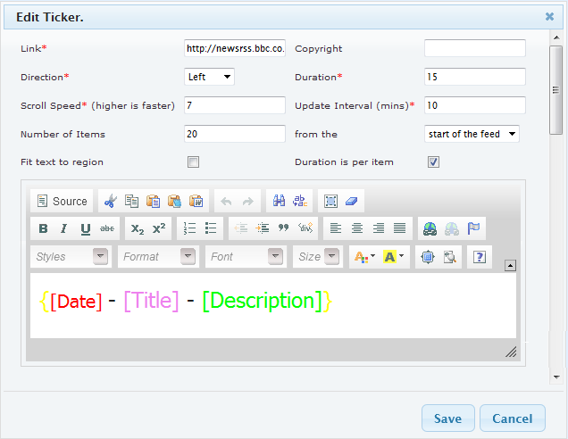

The add ticker form is similar to the text form. It is used to add an RSS feed into your layout. An RSS feed can be used to get up-to-date information from a variety of sources on the internet e.g. http://newsrss.bbc.co.uk/rss/newsonline_world_edition/asia-pacific/rss.xml. There are a couple of additional options which are required.

An RSS feed has a couple of default tags. Each section takes on the properties that you set for each keyword. So if you make [Date] red, then your RSS feeds date will appear red.
Any of these options can be removed and the contents will not be shown. Therefore if you just want the titles of the RSS feed, you just need to include the [Title] tag in the text window.